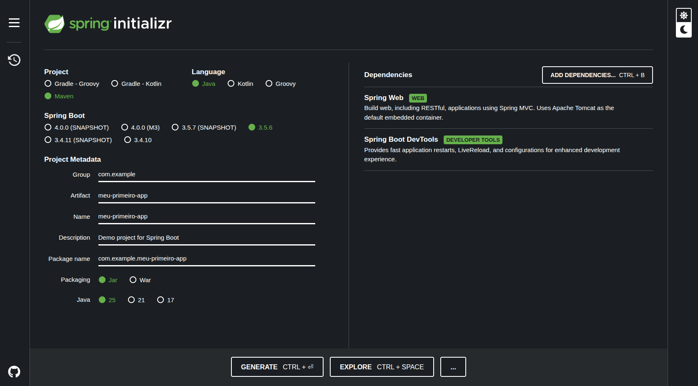

Table of Contents
- Why Spring Boot Changed Java Development?
- What You Will Learn
- Setting Up
- Creating the Project: Three Possible Ways
- Understanding the Project Structure
- The Main Class: The Heart of the Application
- Running for the First Time
- Creating Your First REST API
- Working with JSON: The Modern Web Standard
- Creating a Resource List
- Customizing Configurations
- Organizing Code: Layered Architecture
- Next Steps in Your Journey
- Golden Tips for Beginners
- Complementary Resources
- Conclusion
1. Why Spring Boot Changed Java Development?
Imagine being able to create a complete web application in Java without having to configure dozens of XML files or getting lost in complex configurations. This was exactly the dream of every Java developer a few years ago — and Spring Boot made it a reality.
Before Spring Boot, setting up a traditional Spring project was like assembling a thousand-piece puzzle: you had to manually put together each component, configure application servers, adjust endless XML files, and only then start writing your actual code.
Spring Boot turned this game upside down. It brought the philosophy of “convention over configuration,” which means: less time configuring, more time creating.
2. What You Will Learn
In this guide, we will build an application from scratch together, understanding each step of the way. Don’t worry if you’ve never worked with Spring before — I’ll explain everything clearly and objectively.
By the end of this article, you will have:
- ✅ A Spring Boot project running on your machine
- ✅ Understanding of the fundamental pieces of the framework
- ✅ A simple REST API that you created yourself
- ✅ Solid foundation to explore more advanced features
3. Setting Up
Before starting, make sure you have installed:
- Java 25: Spring Boot 3.x requires at least Java 17
- Maven or Gradle: dependency managers (we’ll use Maven in the examples)
- IDE of your preference: IntelliJ IDEA, Eclipse, VS Code or any editor you like
To check if Java is installed correctly:
java -version
If something like java version "25.0.x" or higher appears, everything is correct!
4. Creating the Project: Three Possible Ways
Way 1: Spring Initializr (Recommended)
Spring Initializr is an official web tool that generates your project skeleton in seconds.
Here’s an explanation for each field in the image:
- Project: In this field you need to choose which management and compression tool you will use. For this example project I will use Maven. Remember that Maven is also a Java dependency manager, just like Gradle;
- Language: Select the programming language you will use to implement the project. In our case we will use Java;
- Spring Boot: Select the Spring Boot version that will be used to create the project. Spring Boot is a framework that makes it easy to create self-sufficient and robust Spring applications, enabling immediate execution. For our example we will use version 3.5.6;
- Project Metadata: This is the project information. In this field you will inform the Group, Artifact, Name, Description, Package name, packaging type and Java version;
- Dependencies: Select the dependencies for the project. Since this is a very simple example project, we will select only three dependencies: Spring Boot DevTools, Spring Boot Actuator and Spring Web.
Step by step:
- Access
https://start.spring.io/ - Configure your project:
- Project: Maven
- Language: Java
- Spring Boot: 3.5.6 (or the latest stable version)
- Group: com.example
- Artifact: my-first-app
- Packaging: Jar
- Java: 25
- Add the initial dependencies:
- Spring Web: to create REST APIs
- Spring Boot DevTools: to automatically restart during development
- Click “GENERATE” and download the ZIP file
Unzip the file to a folder of your choice and open it in your favorite IDE.
Way 2: Via Command Line (For the Adventurous)
If you prefer to use the terminal:
curl https://start.spring.io/starter.zip \
-d dependencies=web,devtools \
-d type=maven-project \
-d language=java \
-d bootVersion=3.5.6 \
-d groupId=com.example \
-d artifactId=my-first-app \
-d packageName=com.example.myfirst \
-d javaVersion=25 \
-o my-first-app.zip
Then just unzip it:
unzip my-first-app.zip -d my-first-app
cd my-first-app
Way 3: Directly in the IDE
IntelliJ IDEA Community and Ultimate have direct integration with Spring Initializr. Just go to:
File → New → Project → Spring Initializr
3. Understanding the Project Structure
When you open the generated project, you find an organized structure:
my-first-app/
├── src/
│ ├── main/
│ │ ├── java/
│ │ │ └── com/example/myfirst/
│ │ │ └── MyFirstAppApplication.java
│ │ └── resources/
│ │ ├── application.properties
│ │ ├── static/
│ │ └── templates/
│ └── test/
│ └── java/
├── pom.xml
└── mvnw (Maven Wrapper)
Understanding Each Part
src/main/java/: This is where all your application’s Java code lives.
src/main/resources/: Configuration files, HTML templates, static files (CSS, JS).
application.properties: Central configuration file — this is where you define server port, database connection, etc.
pom.xml: Lists all the dependencies (libraries) that your project uses. Maven downloads everything automatically.
MyFirstAppApplication.java: The application’s entry point — it’s the main class that starts everything.
6. The Main Class: The Heart of the Application
Open the file MyFirstAppApplication.java. You will see something like this:
package com.example.myfirst;
import org.springframework.boot.SpringApplication;
import org.springframework.boot.autoconfigure.SpringBootApplication;
@SpringBootApplication
public class MyFirstAppApplication {
public static void main(String[] args) {
SpringApplication.run(MyFirstAppApplication.class, args);
}
}
It looks simple, but there’s a lot of magic happening here.
Understanding the @SpringBootApplication Annotation
The @SpringBootApplication annotation is actually three annotations in one:
@Configuration: Tells Spring that this class can contain bean definitions (managed components)@EnableAutoConfiguration: Enables automatic configuration based on project dependencies@ComponentScan: Searches for other components in the same package and subpackages
Think of it as an orchestra conductor: it coordinates all the pieces of the application to work in harmony.
7. Running for the First Time
Let’s see the magic happen! In the terminal, inside the project folder:
./mvnw spring-boot:run
Or, if you’re on Windows:
mvnw.cmd spring-boot:run
You will see several log lines passing quickly. Look for something like:
Started MyFirstAppApplication in 2.847 seconds
Congratulations! Your application is running on port 8080.
Open your browser and access http://localhost:8080. You will see an error page — but don’t worry, this is expected! We haven’t created any routes yet. Let’s do that now.
8. Creating Your First REST API
Let’s create a simple endpoint that returns a welcome message.
Create a new class called HelloController.java inside src/main/java/com/example/myfirst/:
package com.example.myfirst;
import org.springframework.web.bind.annotation.GetMapping;
import org.springframework.web.bind.annotation.RequestParam;
import org.springframework.web.bind.annotation.RestController;
@RestController
public class HelloController {
@GetMapping("/hello")
public String sayHello(@RequestParam(defaultValue = "World") String name) {
return "Hello, " + name + "! Welcome to Spring Boot!";
}
}
Understanding the Code
@RestController: Combines @Controller + @ResponseBody, indicating that this class handles HTTP requests and returns data directly (usually JSON).
@GetMapping("/hello"): Defines that the method below responds to GET requests on the /hello path.
@RequestParam: Captures URL parameters. If not provided, uses “World” as default.
Save the file and, thanks to DevTools, the application restarts automatically.
Now access in the browser:
http://localhost:8080/hello→ “Hello, World! Welcome to Spring Boot!”http://localhost:8080/hello?name=John→ “Hello, John! Welcome to Spring Boot!”
🎉 You just created your first REST API!
9. Working with JSON: The Modern Web Standard
REST APIs usually handle data in JSON format. Let’s evolve our example.
Create a class User.java:
package com.example.myfirst;
public class User {
private String name;
private String email;
private int age;
// Constructor
public User(String name, String email, int age) {
this.name = name;
this.email = email;
this.age = age;
}
// Getters and Setters
public String getName() { return name; }
public void setName(String name) { this.name = name; }
public String getEmail() { return email; }
public void setEmail(String email) { this.email = email; }
public int getAge() { return age; }
public void setAge(int age) { this.age = age; }
}
Now, add a new method in HelloController:
@GetMapping("/user")
public User getUser() {
return new User("Maria Silva", "maria@example.com", 28);
}
Access http://localhost:8080/user and see the magic:
{
"name": "Maria Silva",
"email": "maria@example.com",
"age": 28
}
Spring Boot automatically converts the Java object to JSON. This conversion is done by the Jackson library, which is already included.
10. Creating a Resource List
Let’s create something more realistic: a task API (to-do list).
First, create the class Task.java:
package com.example.myfirst;
public class Task {
private Long id;
private String description;
private boolean completed;
public Task(Long id, String description, boolean completed) {
this.id = id;
this.description = description;
this.completed = completed;
}
// Getters and Setters
public Long getId() { return id; }
public void setId(Long id) { this.id = id; }
public String getDescription() { return description; }
public void setDescription(String description) { this.description = description; }
public boolean isCompleted() { return completed; }
public void setCompleted(boolean completed) { this.completed = completed; }
}
Now create the TaskController.java:
package com.example.myfirst;
import org.springframework.web.bind.annotation.*;
import java.util.ArrayList;
import java.util.List;
@RestController
@RequestMapping("/tasks")
public class TaskController {
private List<Task> tasks = new ArrayList<>();
private Long nextId = 1L;
// Constructor with initial data
public TaskController() {
tasks.add(new Task(nextId++, "Learn Spring Boot", false));
tasks.add(new Task(nextId++, "Create my first API", true));
}
// List all tasks
@GetMapping
public List<Task> listAll() {
return tasks;
}
// Find task by ID
@GetMapping("/{id}")
public Task findById(@PathVariable Long id) {
return tasks.stream()
.filter(t -> t.getId().equals(id))
.findFirst()
.orElse(null);
}
// Create new task
@PostMapping
public Task create(@RequestBody Task newTask) {
newTask.setId(nextId++);
tasks.add(newTask);
return newTask;
}
// Mark as completed
@PatchMapping("/{id}/complete")
public Task complete(@PathVariable Long id) {
Task task = findById(id);
if (task != null) {
task.setCompleted(true);
}
return task;
}
// Delete task
@DeleteMapping("/{id}")
public String delete(@PathVariable Long id) {
tasks.removeIf(t -> t.getId().equals(id));
return "Task successfully removed!";
}
}
Testing the Task API
You can use tools like Postman, Insomnia or cURL itself:
List all tasks:
curl http://localhost:8080/tasks
Find specific task:
curl http://localhost:8080/tasks/1
Create new task:
curl -X POST http://localhost:8080/tasks \
-H "Content-Type: application/json" \
-d '{"description":"Study Controllers","completed":false}'
Mark as completed:
curl -X PATCH http://localhost:8080/tasks/1/complete
Delete task:
curl -X DELETE http://localhost:8080/tasks/2
11. Customizing Configurations
The application.properties file is where you adjust the application’s behavior.
# Change server port
server.port=9090
# Set application context
server.servlet.context-path=/api
# Configure logs
logging.level.root=INFO
logging.level.com.example.myfirst=DEBUG
# Custom messages
app.welcome-message=Welcome to our application!
You can inject these properties into your code:
@RestController
public class ConfigController {
@Value("${app.welcome-message}")
private String message;
@GetMapping("/config")
public String getMessage() {
return message;
}
}
12. Organizing Code: Layered Architecture
As your application grows, it’s essential to organize the code well. A common structure is:
com/example/myfirst/
├── controller/ ← Receives HTTP requests
├── service/ ← Contains business logic
├── repository/ ← Accesses data (database, external APIs)
└── model/ ← Domain classes (Task, User, etc)
This separation brings several benefits:
- 🧩 More organized code: each class has a clear responsibility
- 🔄 Easier maintenance: changes in one layer don’t affect the others
- 🧪 Easier testing: you can test each layer in isolation
13. Next Steps in Your Journey
You took the first step — and what an important step! But the Spring Boot universe is vast. Here are some directions to explore:
Database with Spring Data JPA
Learn to persist real data using JPA and Hibernate. Add the spring-boot-starter-data-jpa dependency and an H2 database to start.
Security with Spring Security
Protect your APIs with authentication and authorization. Spring Security offers powerful features from basic auth to OAuth2.
Automated Testing
Use @SpringBootTest and @WebMvcTest to ensure your application works as expected.
Production Deployment
Learn to package your application in a Docker container and deploy to cloud services like Heroku, AWS, or Azure.
Documentation with OpenAPI
Add springdoc-openapi to automatically generate interactive documentation for your API.
14. Golden Tips for Beginners
💡 Learn gradually: Don’t try to master everything at once. Spring Boot has many features, but you don’t need them all at the beginning.
💡 Read error messages: Spring provides very descriptive errors. Read carefully — usually the solution is there.
💡 Use DevTools: It automatically restarts the application when you save a file. Saves a lot of time!
💡 Explore the official documentation: docs.spring.io/spring-boot is your best friend.
💡 Practice, practice, practice and practice more: Create personal projects. The best way to learn is by doing.
15. Complementary Resources
- 📚 Spring Boot Reference Guide: Complete official documentation
- 🎓 Spring Academy: Official free Spring courses
- 🎥 Spring I/O YouTube: Talks and video tutorials
16. Conclusion
Creating your first Spring Boot project is like learning to ride a bike: it may seem complicated at first, but once you get the hang of it, you never forget.
You learned the essential fundamentals today:
- How to structure a Spring Boot project
- What controllers are and how to create REST endpoints
- How to work with JSON and Java objects
- Configuration and code organization concepts
The most important thing is that you didn’t just read about it — you did it. Your application is running, responding to requests, processing data. This is real programming.
Now it’s time to experiment, break, fix and learn even more. Spring Boot is a powerful tool that is present in thousands of companies around the world. Mastering this technology opens many doors in the job market.
So keep exploring, keep creating and, above all, keep having fun with code!